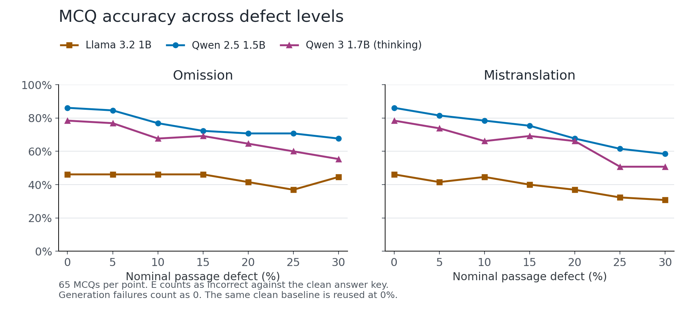
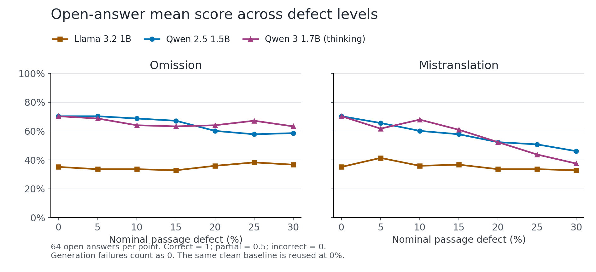

420 combinations; 5,418 answers. Grammar is excluded from this report.

| Condition | Llama 3.2 1B | Qwen 2.5 1.5B | Qwen 3 1.7B (thinking) |
|---|---|---|---|
| Clean | 46.15%0 failures; 7 genuine E answers | 86.15%0 failures; 0 genuine E answers | 78.46%0 failures; 3 genuine E answers |
| Omission 5% | 46.15%0 failures; 7 genuine E answers | 84.62%0 failures; 0 genuine E answers | 76.92%0 failures; 6 genuine E answers |
| Omission 10% | 46.15%0 failures; 6 genuine E answers | 76.92%0 failures; 0 genuine E answers | 67.69%0 failures; 11 genuine E answers |
| Omission 15% | 46.15%0 failures; 7 genuine E answers | 72.31%0 failures; 0 genuine E answers | 69.23%0 failures; 11 genuine E answers |
| Omission 20% | 41.54%0 failures; 7 genuine E answers | 70.77%0 failures; 0 genuine E answers | 64.62%0 failures; 12 genuine E answers |
| Omission 25% | 36.92%0 failures; 8 genuine E answers | 70.77%0 failures; 0 genuine E answers | 60.00%1 failures; 18 genuine E answers |
| Omission 30% | 44.62%0 failures; 8 genuine E answers | 67.69%0 failures; 0 genuine E answers | 55.38%1 failures; 18 genuine E answers |
| Mistranslation 5% | 41.54%0 failures; 6 genuine E answers | 81.54%0 failures; 0 genuine E answers | 73.85%0 failures; 5 genuine E answers |
| Mistranslation 10% | 44.62%0 failures; 7 genuine E answers | 78.46%0 failures; 0 genuine E answers | 66.15%1 failures; 8 genuine E answers |
| Mistranslation 15% | 40.00%0 failures; 10 genuine E answers | 75.38%0 failures; 0 genuine E answers | 69.23%0 failures; 6 genuine E answers |
| Mistranslation 20% | 36.92%0 failures; 10 genuine E answers | 67.69%0 failures; 1 genuine E answers | 66.15%0 failures; 10 genuine E answers |
| Mistranslation 25% | 32.31%0 failures; 8 genuine E answers | 61.54%0 failures; 1 genuine E answers | 50.77%0 failures; 15 genuine E answers |
| Mistranslation 30% | 30.77%0 failures; 7 genuine E answers | 58.46%0 failures; 1 genuine E answers | 50.77%0 failures; 22 genuine E answers |
| Word-by-word | 32.31%0 failures; 10 genuine E answers | 64.62%0 failures; 0 genuine E answers | 66.15%1 failures; 9 genuine E answers |

| Condition | Llama 3.2 1B | Qwen 2.5 1.5B | Qwen 3 1.7B (thinking) |
|---|---|---|---|
| Clean | 35.16%0 failures | 70.31%0 failures | 70.31%3 failures |
| Omission 5% | 33.59%0 failures | 70.31%0 failures | 68.75%4 failures |
| Omission 10% | 33.59%0 failures | 68.75%0 failures | 64.06%7 failures |
| Omission 15% | 32.81%0 failures | 67.19%0 failures | 63.28%5 failures |
| Omission 20% | 35.94%0 failures | 60.16%0 failures | 64.06%5 failures |
| Omission 25% | 38.28%0 failures | 57.81%0 failures | 67.19%3 failures |
| Omission 30% | 36.72%0 failures | 58.59%0 failures | 63.28%5 failures |
| Mistranslation 5% | 41.41%0 failures | 65.62%0 failures | 61.72%2 failures |
| Mistranslation 10% | 35.94%0 failures | 60.16%0 failures | 67.97%3 failures |
| Mistranslation 15% | 36.72%0 failures | 57.81%0 failures | 60.94%3 failures |
| Mistranslation 20% | 33.59%0 failures | 52.34%0 failures | 52.34%4 failures |
| Mistranslation 25% | 33.59%0 failures | 50.78%0 failures | 43.75%1 failures |
| Mistranslation 30% | 32.81%0 failures | 46.09%0 failures | 37.50%4 failures |
| Word-by-word | 36.72%0 failures | 51.56%0 failures | 55.47%2 failures |